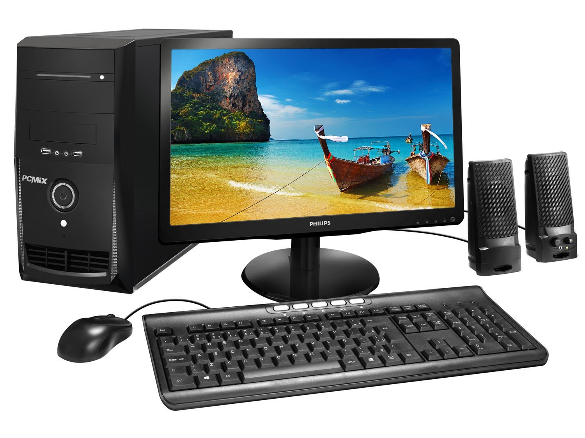
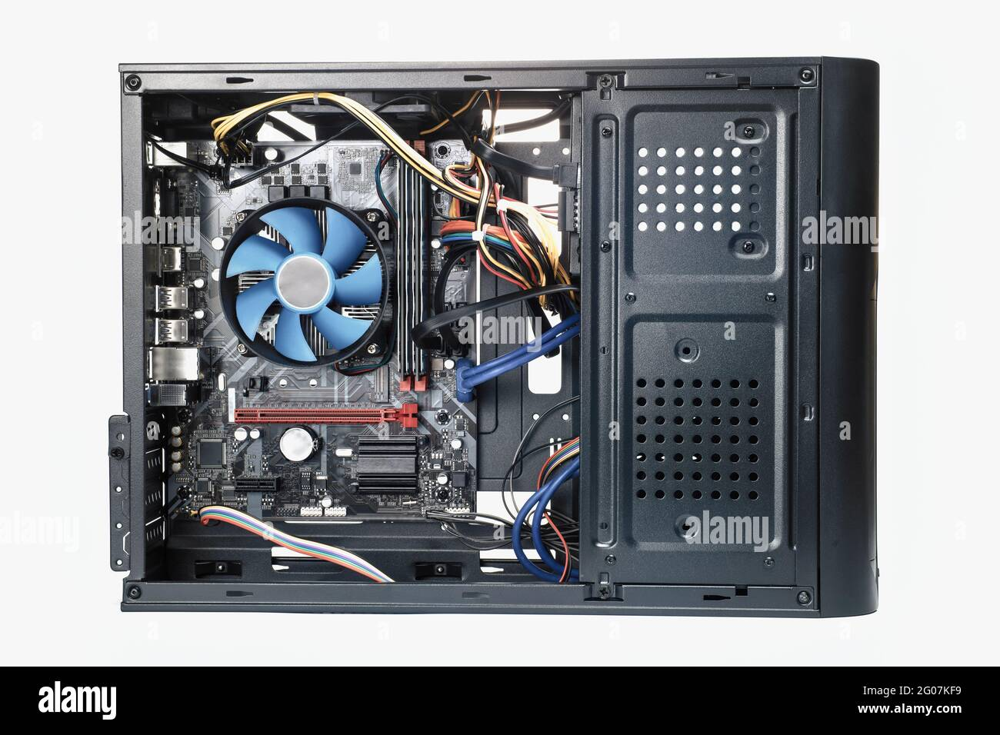
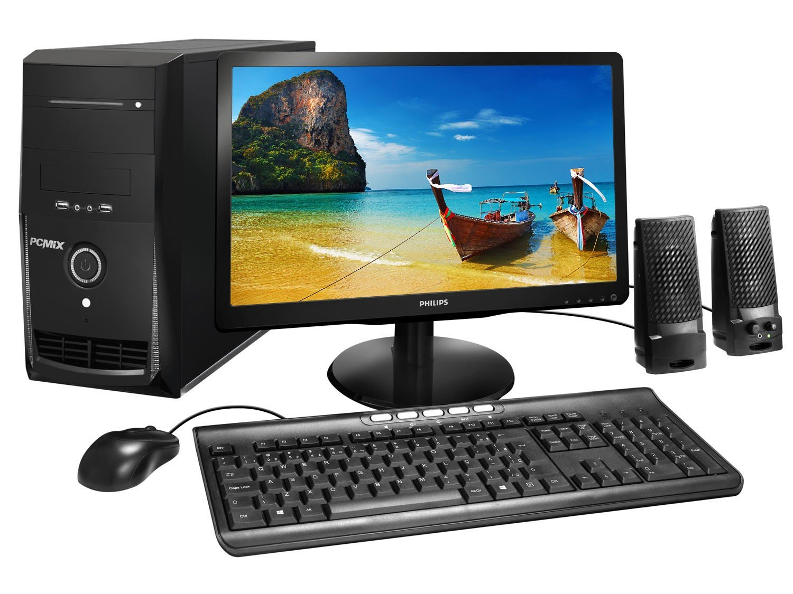
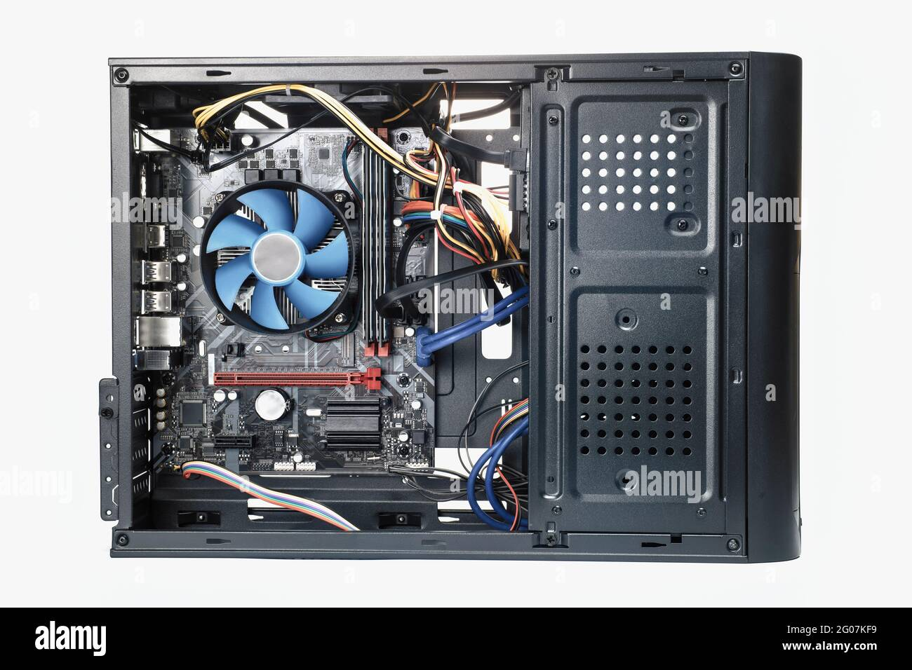
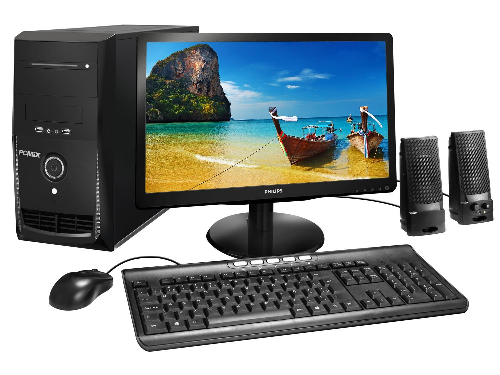
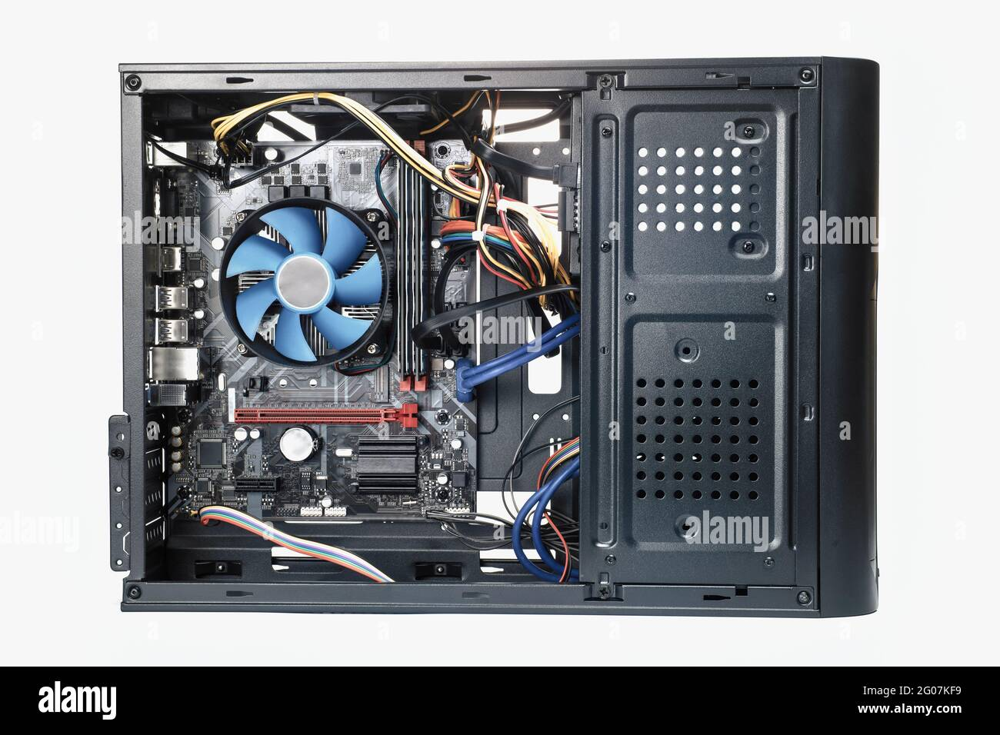

Oi, meu nome é Weberthon e estou no 2° ano do ensino médio. Bom, antigamente nas escolas não era muito comum
dar cursos, mas agora quem entra no ensino médio tem a oportunidade de cursar sobre informática ou
Segurança Do Trabalho
.
Nesse ano aumentou bastante matéria pra gente e elas são:
POO/JAVA,
NOÇÕES DE ROBOTICA,
GESTÃO DE TEMPO,
SISTEMAS OPERACIONAIS,
PROGRAMAÇÃO WEB,
ARQUITETURA E MANUTENÇÃO DE COMPUTADORES e
HTML/CSS.
Ano que vem serão adicionadas mais algumas. O nosso curso é bem completo e tem professores bons – não aprende quem não quer!
Ano passado aprendemos bastante; eu até comecei a programar um jogo kkkk. Então, esse curso abre várias portas – inclusive,
é por causa do curso que eu consegui fazer esse site.

